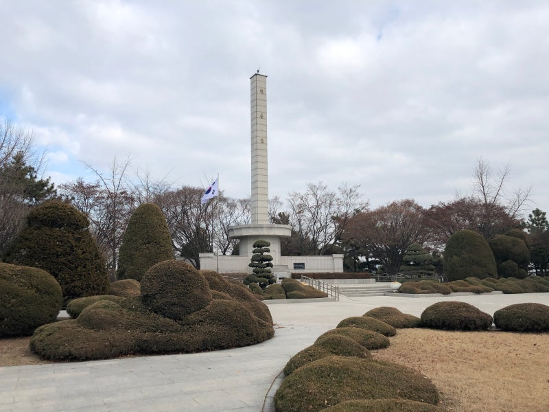

300만
인천 시민이
함께하는 커뮤니티
함께하는 커뮤니티
About Incheon Archive
인천의 모든 순간이 연결되는 곳,
300만 인천 시민의 리얼 라이프 커뮤니티
인천 커뮤니티는 300만 인천 시민이 일상의 소소한 행복부터 지역의 중요한 이슈까지 가감 없이 나누는 가장 가까운 디지털 광장입니다.
우리는 파편화된 정보들 사이에서 신뢰할 수 있는 로컬 콘텐츠를 선별하고, 이웃 간의 따뜻한 연결을 통해 더 나은 지역 문화를 만들어가고자 합니다.
단순한 게시판을 넘어 인천의 어제와 오늘, 그리고 내일을 기록하는 시민 모두의 열린 공간으로서 여러분과 함께 성장하겠습니다.
Notice
공지사항
인천 아카이브의 새로운 소식과 안내를 확인하세요.
- 01 중요 2026-04-20
- 02 이벤트 2026-04-05
- 03 점검 2026-03-10
- 04 안내 2026-03-02
- 05 보안 2026-02-15
- 06 안내 2026-02-01
- 07 캠페인 2026-01-12
- 08 필독 2026-01-05
Community Rule
이용수칙
건강한 소통을 위해 함께 지켜주세요.
모든 회원은 동등한 인격체로서 비칭, 욕설, 비하 발언을 금합니다.
확인되지 않은 루머나 허위 사실 유포 시 게시글이 삭제될 수 있습니다.
타인의 연락처, 주소 등 개인 식별 정보를 무단 게시하는 행위를 제한합니다.
각 게시판 성격에 맞는 글 작성을 권장하며, 목적 외의 글은 이동될 수 있습니다.
동일하거나 유사한 내용의 반복 게시물은 스팸으로 간주하여 제재합니다.
외부 콘텐츠 인용 시 반드시 출처를 표기하며, 저작권 침해 요소가 없어야 합니다.
승인되지 않은 영리 목적의 홍보글이나 링크 유도 행위는 제한됩니다.
본인이 작성한 게시물과 댓글에 대해서는 작성자 본인에게 법적 책임이 있습니다.
FAQ
자주묻는 질문
마우스를 올리면 슬라이드가 멈춥니다.